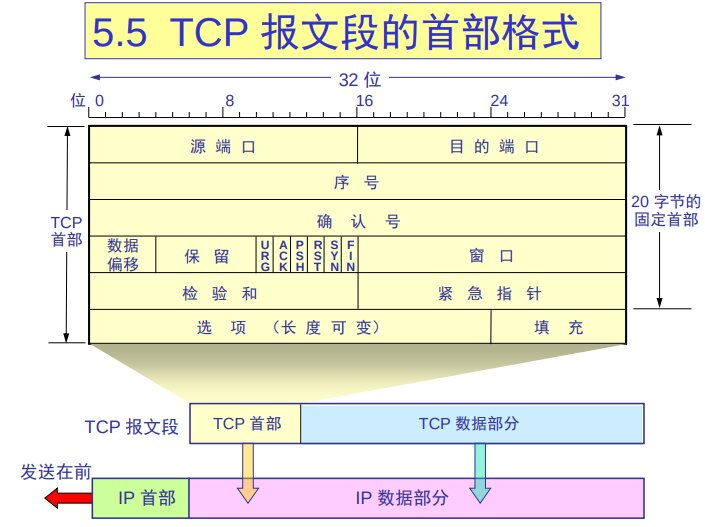
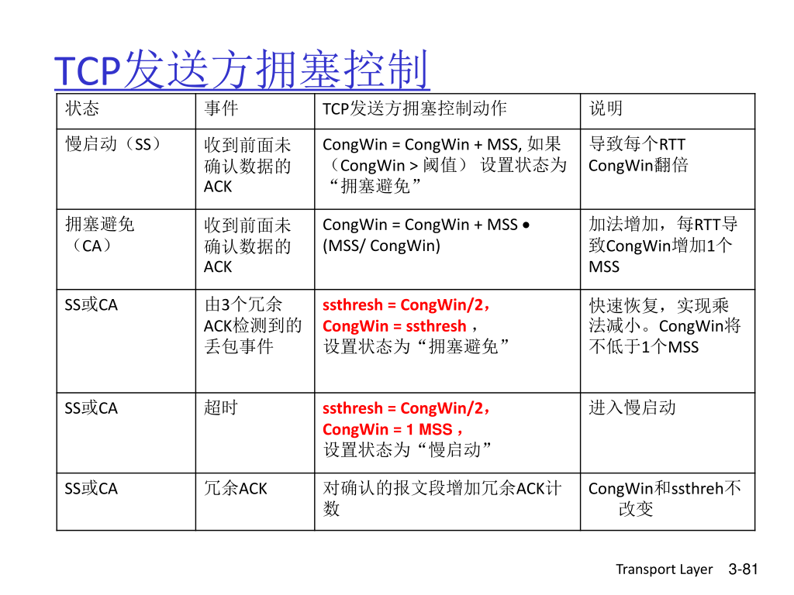

计算机网络
1. 概述
2. 应用层
电路交换 circuit-switching
频分，时分
建立连接 - 数据传输 - 释放资源
分组 (包) 交换 package-switching
为每一个连接只分配一小块资源，同时服务多个 (用户) 连接
端到端
-
所有数据包都是利用的完整的带宽，带宽不用分片
-
限制在交换机转发的能力
-
不需要预留资源
-
不需要提前和转发设备沟通，
-
需要存储转发
-
超过转发能力会有排队延迟，甚至产生丢包
- 电路交换会限制发送速率，不会在中间产生不可用
3. 传输层
1. 传输层服务
-
传输层和网络层的区别
- 网络层：主机间的逻辑通信
- 传输层：进程间的逻辑通信
传输层的服务 = 传输层的协议 + 网络层的服务
不同主机进程间数据传输 = 传输层的协议 + 进程所在主机间数据传输
发送端：
- 接收应用层的消息
- 设置报文头部字段的值
- 创建报文段
- 把报文端传递给对应 IP
接收端：
- 从某 IP 接收 报文段
- 检查 header 的值
- 解析应用层消息
- 通过 socket 把数据多路分解到应用
-
两个传输层协议
TCP(Transmission Control Protocol):
- 可靠传输 (reliable, in-order delivery)
- 拥塞控制 (congestion control)
- 流量控制 (flow control)：确保发送端不会发送过多数据导致接收端 buffer 溢出而丢包的机制
- 面向建立
UDP(User Datagram Protocol):
- 不可靠传输 (unreliable, unordered delivery)
- 尽力而为 (no-frills extension of "best-effort" IP)
2. 多路复用 / 多路分解
Multiplexing/demultiplexing
- 创建 socket 时需要指定本机端口号
- 连接 UDP 时需要指定目的主机的 IP 和 端口号
- 当接收端接收到 UDP 报文后会检查目的端口，然口投递到对应的进程
TCP 面向连接，TCP socket 定义了一个四元组
总结
- UDP 多路分解只使用端口号
- TCP 多路分解使用 源和目地的 IP 和 端口
- 多路复用和多路分解发生在所有层
3. 无连接传输 UDP
UDP 特点
-
UDP 是一种尽力而为的协议
- UDP 报文段可能会丢失
- 也可能会乱序
-
无连接
- UDP 发送端和接收端不需要握手
- 每一个 UDP 数据段都是独立的，上下可能没有关系
- 只有 checkout 用于错误检验
为什么需要 UDP？
- 无连接简历（可能会增加延迟）
- 简单，发送端和接收端不需要保存连接状态
- 没有拥塞控制，UDP 会尽可能快的送达
应用场景：
流媒体 app
- 低延迟
- 速度敏感
如何在 UDP 上个构建可靠传输：在应用层上构建可靠性
UDP 报文段格式
+---------+---------+
| 源端口 | 目的端口 |
+---------+---------+
| 长度 | 校验和 |
+---------+---------+
| 应用数据（消息） |
| |
+-------------------+
- 长度：UDP 报文段的长度（包含 header）
- 数据：上层协议数据，例如 DNS，SNMP
- checksum：错误检测（数学手段的冗余）
checksum 计算方法
将所有数据求和
- 假如发送 5 bit 数据 (7, 11, 12, 0, 6), 实际会发送 (7, 11, 12, 0, 6, 36)
- 接收方重新计算数字之和，并与收到的比较
- 发送方法送的是实际数据的反码 (-36), 被称为 checkout
问题
如何用 4 bit 表示 36 和 -36？
答：1s 补运算
36 = 0001 01000100 + 0100 = 0110 = 6+6 = 0100 -6 = 1001 取反得到 -6-36 可以用 1001(9) 表示
1110 0110 0110 0110
1101 0101 0101 0101
11011 1011 1011 1011
1011 1011 1011 1100
4. 可靠传输
rdt
Rdt1.0:
- 下层的 channel 是可靠的
- 不会发生比特翻转
- 不会丢包
- 为 sender，receiver 设置不同的 FSM
- sender 和 receiver 分别从下层的 channel 发送和接收数据
Rdt2.0:
- 发送端发送数据
- 接收端接收数据，如果接收到的数据正确，返回 ACK，如果数据错误，返回 NAK。
- 发送端根据收到的是 ACK 还是 NAK，选择重传
问题：
- 出现比特翻转
- 使用 checksum 检测错误
- ack/nak 确认
- 重传
- 如何从错误恢复：
- 自动请求重传
- 新的状态机
- sender 使用 udt_send 发送数据，发送完毕后等待接收 ACK。
- 如果接收到了 ACK，就是成功。
- 如果接收到了 NAK，就会重传。
缺点：
- 如果接收方成功接收，但是返回失败，会导致消息不一致
rdt2.1:
解决同步问题 和 ACK/NAK 出错：
- 发送端发送的数据除了数据和 checksum 之外还有一个序列号
- 在接收端返回 ACK 或 NAK 是，还会返回序列号
- 发送端直到收到正确的序列化才会转换到下一个状态
- 是需要 0 和 1 两个状态其实就够了，区分新包和旧包
rdt2.2:
去掉 NAK，都用 ACK 表示：
- 发送方发送 ACK
- 接收方接收到数据，如果正确，返回原本的 ACK，如果错误，返回其他数据表示错误。
- 发送方检查 ACK，如果 ACK 相同，则切换到下一个状态
rdt3.0:
- 可能发送丢包
- 发送端等待一段时间，可能是数据丢了 或者 ACK 丢了，无法区分，统一重传
- 等待多久，准本计数器，等待超时
Pipelined protocols (流水线)
提高效率，在发送端收到确认后可以发送更多数据
每次发送多份数据，当份数提高到一定程度，利用率就到 100%, 无法继续提高效率
-
go-Back-N
滑动窗口，重传很多
积累确认机制
-
发送方发送 5 个数据包
-
假如第 3 个丢失，接收方会返回错误的序号
-
发送端从这里重新发送
-
在接收方
-
如果到达分组是按序到达，那么发送 ACK，发送方正常移动窗口
-
如果不是按序到达，那么接收方丢弃所有失序分组；丢弃一个正确接收的失序分组可能会导致更多的重传
-
如果某个确认丢失，后续的确认（只有发送端正确接收到了数据才可能会有后续的确认）也能使发送端正常移动窗口
-
-
selective repeat(选择重传)
- 接收方因为有 buffer，所以不用按序接收分组，失序的分组会被缓存
- 发送方的 buffer，每个数据包都有各自的计数器，不用重传多的数据包
为了防止误判数据包
ACK 编号数量至少要 = 发送窗口 + 接收窗口
TCP

- 源端口和目的端口字段：各占 2 字节。端口是运输层与应用层的服务接口。运输层的复用和分用功能都要通过端口才能实现。
- 序号字段：占 4 字节。TCP 连接中传送的数据流中的每一个字节都编上一个序号。序号字段的值则指的是本报文段所发送的数据的第一个字节的序号。
- 确认号字段：占 4 字节，是期望收到对方的下一个报文段的数据的第一个字节的序号。
- 数据偏移（即首部长度）：占 4 位，它指出 TCP 报文段的数据起始处距离 TCP 报文段的起始处有多远。“数据偏移”的单位是 32 位字（以 4 字节为计算单位）。
- 保留字段：占 6 位，保留为今后使用，但目前应置为 0。
- 紧急 URG：当 URG 1 时，表明紧急指针字段有效。它告诉系统此报文段中有紧急数据，应尽快传送 (相当于高优先级的数据)。
- 确认 ACK：只有当 ACK 1 时确认号字段才有效。当 ACK 0 时，确认号无效。
- 推送 PSH (PuSH)：接收 TCP 收到 PSH = 1 的报文段，就尽快地交付接收应用进程，而不再等到整个缓存都填满了后再向上交付。
- 复位 RST (ReSeT) ：当 RST 1 时，表明 TCP 连接中出现严重差错（如由于主机崩溃或其他原因），必须释放连接，然后再重新建立运输连接。
- 同步 SYN：同步 SYN = 1 表示这是一个连接请求或连接接受报文。
- 终止 FIN (FINis) ：用来释放一个连接。FIN 1 表明此报文段的发送端的数据已发送完毕，并要求释放运输连接。
- 窗口字段：占 2 字节，用来让对方设置发送窗口的依据，单位为字节。
- 检验和：占 2 字节。检验和字段检验的范围包括首部和数据这两部分。在计算检验和时，要在 TCP 报文段的前面加上 12 字节的伪首部。
- 紧急指针字段：占 16 位，指出在本报文段中紧急数据共有多少个字节（紧急数据放在本报文段数据的最前面）。
- 选项字段：长度可变。TCP 最初只规定了一种选项，即最大报文段长度 MSS。MSS 告诉对方 TCP：“我的缓存所能接收的报文段的数据字段的最大长度是 MSS 个字节。
TCP seq 序列号
TCP Feature
- Point to Point (单播，单发送者，单接收者)
- reliable, in-order byte stream
- pipelined（拥塞控制，流量控制）
- send & receive buffers
- full deplex data(全双工，双向数据传输，MSS(最大报文长度))
- connection-orinted(握手，初始化 sender 和 receiver 的状态)
- flow controlled(发送端不能超过接收端的处理能力)
Flow Control
为什么需要流量控制？
- 发送者接收者的速率不一定匹配，如果发的快，可能产生消息堆积
如何解决？
- 接收端需要通知发送端自己的缓冲区大小，让它不要发送太多。对应的就是 TCP 协议中规定的 Receive Window (接收窗口) 字段
注意滑动窗口 (发送窗口)，接收窗口，以及之后的拥塞窗口的区别
Congestion Control
拥塞
- 太多发送源发送了太多的数据，超过了网络的承载能力
- 对资源需求的总和 > 可用资源
- 与流量控制不同
- 表现
- 丢包
- 高延迟
- top-10 question!
解决方法
-
端到端
- 没有来自网络的明确反馈
- 端系统通过丢包和延迟推测出可能通过拥塞
- TCP 采用这种方法
-
网络层辅助
- 路由主动反馈给端系统
- 由 1 个 bit 指出网络存在拥塞 (SNA, DECbit, TCP/IP ECN, ATM)
- 发送端需要以一个固定的速率发送数据
- 路由主动反馈给端系统

三大问题
-
如何限制发送速度？
-
Last Byte Sent(上一个发送的字节) - Last Byte Acked(最后确认的字节) < CongWin(拥塞窗口)
-
rate(发送速率) = CongWIn / RTT B/s
-
-
如何检测到拥塞？ loss event = timeout or 3 duplicate acks
-
应该发送多快？
-
AIMD
- 加法增加，乘法减小 (additive increase, multiplicative decrease)
- 增加有一个单位（1 字节，1k），一般以 MSS 数量为单位
- 图像表现为锯齿状
-
slow start
- 连接开始时，CongWin 为 1MSS，
- 每次接收到 ACK，CongWin 就会乘 2
- 慢启动其实并不慢，增加的速度很快
- 速度增加有一定得阈值，当超过阈值后，到达新阶段，一般称为 "拥塞避免"，每次只会增加 1 个 MSS。
- 连接开始时，CongWin 为 1MSS，
-
conservative after timeout events
- 发生丢包后
- 窗口掉回 1 MSS
- 线性增加
- 收到 3 个重复的 ACK
- 窗口砍半
- 线性增加
- 快速重传
- 新的阈值都为上次阈值的一半
丢包相对于 3 个重复的 ACK 更严重
- 发生丢包后
-
TCP CUBIC
- 窗口减半后，增加的速度改为
x^3的曲线
- 窗口减半后，增加的速度改为
-
TCP 公平性
AIMD 具有较好的公平性，使得不同连接占有的带宽相等
如果 TCP 和 UDP 同时竞争会怎样？TCP 会主动降低速度，UDP 则不管 想要可靠传输，不想要拥塞控制怎么办？在 UDP 的基础上自行实现可靠传输 (QUIC 就是这么干)
4. 网络层
简介
- 提供主机间的数据传输
- 发送端将段 (segments) 封装为数据报，接收端把 segments 发送到传输层
- 网络层协议在各个主机和路由间
- router 会确认经过他的所有 IP 数据报的 header 字段
转发 & 路由
路由：决定从发送源发送的 packets 到目的地的路径
- 路由选择算法
转发：把 packets 从路由的输入转发到合适的输出
- 如何通过某一个交换机
数据平面，控制平面
-
数据平面
- 局部的
-
控制平面
- 全局的
- Per-router control plane
- 每一个路由设备单独实现路由算法
- Software-Defined Networking(SDN) control plane
- 由一个集中式的计算机计算路由并向下发送了路由表
是否建立连接
- 三种重要的网络架构
- ATM, frame relay, X.25
- 在数据报流动前，两个主机以及它们之间的路由会建立虚拟连接
- 网络层和传输层连接的区别
- 网络层：两个主机之间 (也可能包含之间的交换机)
- 传输层：两个进程之间
虚电路 & 数据报
-
虚电路
- 有连接
-
数据报
- 无连接
网络层应该是面向连接的还是无连接的？ 在计算机通信中，可靠交付应该由谁来负责？是网络还是端系统？
转发表的建立
对于虚电路，转发表会在建立连接时产生
IP 地址
addressing, forwarding, routing
- 地址块如何设计
- 对存储和转发的影响
IP 地址的编址方法
分类的 IP 地址
- 每一类地址都由两个固定长度的字段组成
- 网络号 net-id: 标志主机（或路由器）连接到的网络
- 主机号 host-id：标志该主机或路由器
- 两级的 IP 地址可以记为：
IP 地址 ::= { <网络号>, <主机号>}
::=表示 "定义为"
| 网络类别 | 首部 | 地址范围 |
|---|---|---|
| A 类 | 0 | 1.0.0.0 - 127.255.255.255 |
| B 类 | 10 | 128.0.0.0 - 191.255.255.255 |
| C 类 | 110 | 192.0.0.0 - 223.255.255.255 |
| D 类 | 1110 | 224.0.0.0 - 239.255.255.255 |
| E 类 | 1111 |
| 类别 | 最大网络数 | 第一个可用的网络号 | 最后一个可用的网络号 | 每个网络中的最大主技术 | | A | 126(2^7 - 2) | 1 | 126 | 16,777,214 | | B | 16383(2^14 - 1) | 128.1 | 191.255 | 65,534 | | C | 2097151(2^21 - 1) | 192.0.1 | 223.255.255 | 254 |
-
私有地址
- A: 10.0.0.0 - 10.255.255.255(10.0.0.0/8 prefix)
- B: 172.16.0.0 - 172.31.255.255(172.16.0.0/12 prefix)
- C: 192.168.0.0 - 192.168.255.255(192.168.0.0/16 prefix)
-
127.0.0.1: loopback
-
255.255.255.255:
-
0.0.0.0:
子网的划分
CIDR 方案
- 无分类的编制方法
IP 地址的一些重要特点
- IP 地址是 "分等级" 的地质结构
- 方便了 IP 管理：IP 管理机构分配 IP 时只分配网络号，剩下的交由单位自行管理
- 减小了路由表的大小：路由器仅根据网络号来转发路由（不用考虑目的主机号），减少了路由表项数，减小了存储空间。
- 实际上 IP 地址标志一个主机和一条链路的接口
- 当一个主机同时连接到两个网络上时，它必须同时有两个 IP 地址，并且 net-id 必须不同（称为多归属主机）
- 一个路由器至少要连接到两个网络，才能将 IP 数据报总一个网络转发到另一个网络。因此路由器至少有两个不同的 IP 地址
- 用转发器或者网桥连接起来的若干局域网仍属以一个网络，这些局域网有相同的 net-id
分类 IP 地址的路由转发
- direct delivery 直接投递/交付
- indirect delivery 间接投递/交付
- Route based，基于路径（构建转发表困难，维护难度大）
- Next hop based，基于下一跳（类似于 "路牌"）
-
如果多个源 IP 有相同的下一跳，他们的目的地址可以合并
-
Default routing（缺省（默认）路由）
划分子网和构造超网
-
从两极 IP 到 三级 IP 地址 原因：
- IP 地址利用率低
- 为每一个物理网络分配一个网络号会使路由表变大，降低性能
- 两极 IP 地址不够灵活
-
子网掩码
子网掩码前一部分为 1，后一部分全为 0，将子网掩码与 IP 地址进行 "与" 运算，就能找到 IP 地址的子网部分。
可以用来区分 net-id 和 host-id 或者 subnet-id 和 host-id
不同的子网掩码可以得到相同的网络地址，但是不同的掩码的效果是不同的。如果使用，路由器给出目的的网络地址外，还必须同时给出该网络的子网掩码。
若一个路由器连接在两个子网上，他就有两个网络地址和子网掩码
无分类编址 CIDR
-
CIDR 特点
- 消除了 A，B，C 类地址，以及划分子网的概念
- 使用各种长度的 "网络前缀" 代替分类地址中的网络号和子网号。
- 从三级编制（取消子网掩码）变回二级编制
-
无分类的两级编址
- IP 记法：
IP 地址 ::= {<网络前缀>, <主机号>} - CIDR 还是用斜线记法：在 IP 地址面加一个
/，后面跟上网络前缀所占的位数。（对应子网掩码中 1 的个数） - 举例：128.14.32.0/20
min: 128.14.32.0, max: 128.14.47.255 - 全 0 和全 1 一般不使用
- IP 记法：
-
可变掩码长度向右移能划分为小块，向左移合并为大块
-
路由聚合减少了路由表的表项
IP 配置
-
系统管理员将 IP 硬编码到文件中 UNIX: /etc/rc.config
-
DHCP: Dynamic Host Configuration Protocal:
从服务器动态获取 IP
目的：允许主机加入网络后，从网络服务器，动态获取自己的 IP 地址。
- 支持重置，复用，手机用户
DHCP
Overview
- 主机广播 "DHCP discover" 消息
- DHCP 服务器回复 "DHCP offer" 消息
- 主机请求 IP 地址："DHCP request" 消息
- DHCP 服务器发送地址："DHCP ack" 消息
NAT 网络地址转换
动机
对外部世界而言，本地网络只使用一个 IP 地址
- 不需要 ISP 提供一系列地址，所有设别共用一个 IP 地址。
- 无需通知外部实际就可以更换本地网络的设备 IP.
- 可以在不改变本地设备 IP 情况下更换 ISP.
- 内网对外不设备不可见。
实现
NAT 路由必须
-
将每个向外发送数据报的源 IP 地址，端口替换为 NAT 的 IP 地址，新端口
. .远程客户/服务器将使用 NAT 的 IP 地址，新端口作为目标地址进行响应。
-
在 NAT 转换表中记录每一个源 IP 地址，端口到 NAT IP 地址，新端口的映射
-
传入的数据报，将 NAT IP 地址和端口替换为 NAT 表中相应的源 IP 地址，端口。
NAT 的缺点
- 16 位端口号：60000 同时连接到同一个地址
- NAT 有争议
- routers should only process up to layer 3
- violates end-to-end argument(违背 e2e 原则)
- NAT possibility must be taken into account by app designers, eg, P2P applications
- address shortage should instead be solved by IPv6
NAT 的问题
外部的客户端如何访问内网地址？
-
- 静态配置端口转发
-
- Universal Plug and Play (UPnP) Internet Gateway Device (IGD) Protocol.
- learn public IP address (138.76.29.7)
- enumerate existing port mappings
- add/remove port mappings (with lease times)
自动配置静态端口映射
-
- 中继 (Skype 使用)
IP 数据报格式
首部 (20 字节固定 + 变长) + 数据
- 版本——占 4 位，指 IP 协议的版本，目前的 IP 协议版本号为 4 (即 IPv4)
- 首部长度——占 4 位，可表示的最大数值是 15 个单位 (一个单位为 4 字节) 因此 IP 的首部长度的最大值是 60 字节。
- 区分服务——占 8 位，用来获得更好的服务在旧标准中叫做服务类型，但实际上一直未被使用过。1998 年这个字段改名为区分服务。只有在使用区分服务（DiffServ）时，这个字段才起作用。在一般的情况下都不使用这个字段
- 总长度——占 16 位，指首部和数据之和的长度，单位为字节，因此数据报的最大长度为 65535 字节。总长度必须不超过最大传送单元 MTU。
- 标识 (identification) 占 16 位，它是一个计数器，用来产生数据报的标识。
- 标志 (flag) 占 3 位，目前只有前两位有意义。标志字段的最低位是 MF (More Fragment)。
- MF = 1 表示后面“还有分片”。
- MF = 0 表示最后一个分片。
- 标志字段中间的一位是 DF (Don't Fragment) 。只有当 DF = 0 时才允许分片。
- 片偏移 (12 位) 指出：较长的分组在分片后某片在原分组中的相对位置。片偏移以 8 个字节为偏移单位。
- 生存时间 (8 位) 记为 TTL (Time To Live) 数据报在网络中可通过的路由器数的最大值。
- 协议 (8 位) 字段指出此数据报携带的数据使用何种协议以便目的主机的 IP 层将数据部分上交给哪个处理过程
- 首部检验和 (16 位) 字段只检验数据报的首部不检验数据部分。这里不采用 CRC 检验码而采用简单的计算方法。
- 源地址和目的地址都各占 4 字节
路由
路由算法
-
全局的
- 链路状态 (link state) 算法
- 所有路由器都有完整的拓扑结构和链路成本信息
-
分布式的
- 路径向量 (distance vector) 算法
- 路由器知道有物理连接的邻居，与邻居的链接成本
- 迭代计算的过程，与邻居交换信息
-
静态
- 路径更新缓慢
-
动态
- 路径更新更快
- 定期更新
- 应对链路变化的成本
Dijkstra 算法
算法复杂性：N 个节点
- 每次迭代：需要检查所有的节点，w，不在 N 中的节点 n(n+1)/2 的比较。O(n2)
- 可能有更有效的实现。O(nlogn)
有可能出现震荡：例如，链路成本=承载流量的数量
Distance Vector 算法
d(x, y) = min { c(x, v) + d(v, y) }
对比
link state(LS):
- 把距离向量告诉所有人
distance vector(DV):
- 把距离向量只告诉邻居
实际上都有缺点：
- 这两个算法都只适合规模较小的网络
- 路由器不一定能执行统一的路由算法
分层路由
引入 AS 自治系统，使用内部外部两套路由算法
- AS 以内：使用 intra-AS 路由算法
- AS 之间：inter-AS 算法
Intra-AS 路由
也称为 (Interior Gateway Protocols) IGP 内部网关协议
-
RIP
- distance vector
- 最远经过 15 个路由器
- 每 20 秒交换一次路由
- 适用于小型网络
-
OSPF
- Dij
- OSPF 是分层的，具有可扩展性
- 通告放在 UDP 里
-
IGRP
Inter-AS 路由
(Border Gateway Protocol) BGP 边缘网关协议
通告是路径向量 (Path Vector)，从 AS-a 到 AS-b 的路径向
基于策略路由，方便管理，不是为了找到最优路由
通告放在 TCP 里
链路层
链路的类型
- 点对点
- 广播或共享式链路
- 交换式
问题：
-
帧
- 把上层的数据组装成帧
解决透明传输
- 比特填充
- 字节
-
检错
奇偶校验
CRC: 循环冗余校验
-
可靠传输
-
广播的特有问题
- 多路控制
- 地址区分
多路访问协议 (multi access protocol)
接收端同时接受两个以上信号时会发生冲突，多路访问需要解决这个问题
多路访问特点：
解决方法：
- 信道划分 (Channel Partitioning)
- 时分：可能会产生浪费
- 频分：不够灵活
- 码分 (CDMA):
- 随机访问 (Random Access)
- 可能产生冲突
- 需要从冲突中恢复
- 轮转 ("Taking turn")
- 节点多的时候轮转时间会变长
随机访问
如何检错，如何恢复？
-
ALOHA:
- 有数据就发，有冲突就停止
- 最大利用率 37%
-
Pure ALOHA:
- 最大利用率 18%
-
CSMA (载波监听，多点接入):
- 先去监听是否有其他人发数据，没有了再发
-
CSMA/CD (Collision detection)
- 带有冲突检测，一边发一边检测
轮流访问
-
轮询 (Polling)
-
令牌传递 (Token passing)
MAC 地址
一般直接写入网卡
- 48 bit
广播地址：FF-FF-FF-FF-FF-FF
ARP (address resolution protocol)
ARP 地址解析协议
通过 ARP 表将 ip 解析为 MAC 地址
| IP addr | MAC addr | TTL |
|---|---|---|
如何构建 ARP 表？
-
广播：A 通过广播发送 ARP 请求
-
响应：B 响应时是单播，返回自己的 MAC 地址
-
保存：A 将收到的数据放入自己的 ARP 表
路由器不会改变源 IP 和目的 IP, 目的 MAC 地址则会一直改变
- 发送方是主机，要把 IP 数据报发送到本网络上的另一个 主机。这时用 ARP 找到目的主机的硬件地址。
- 发送方是主机，要把 IP 数据报发送到另一个网络上的一 个主机。这时用 ARP 找到本网络上的一个路由器的硬件 地址。剩下的工作由这个路由器来完成。
- 发送方是路由器，要把 IP 数据报转发到本网络上的一个 主机。这时用 ARP 找到目的主机的硬件地址。
- 发送方是路由器，要把 IP 数据报转发到另一个网络上的 一个主机。这时用 ARP 找到本网络上另一个路由器的硬 件地址。剩下的工作由这个路由器来完成。
Repeaters (中继器)
Hubs(集线器)
- 和中继器是同一类设备，只不过端口数量更多
- 集线器会将从一个链路传来的数据转发到所有其他链路
- 所有连接的链路都会发生冲突
- 用集线器组成的更大局域网都在一个碰撞域里，所以总吞吐量并未提高
Bridge(网桥)
Switch(交换机)
- 多端口的网桥
- 智能化转发，自动学习
交换机可以分割冲突域
Switch Table (交换表)
| MAC address of host | interface to reach MAC | time stamp |
- 交换机一定不能成环，否则会产生广播风暴
| 集线器 | 交换机 | 路由器 | |
|---|---|---|---|
| 分割冲突域 | 0 | 1 | 1 |
| 分割广播域 | 0 | 0 | 1 |
| 即插即用 | 1 | 1 | 0 |
| 最有路径 | 0 | 0 | 1 |
| 直通转发 | 1 | 1 | 0 |
VLAN
- 虚拟局域网
- 可以跨交换机
- 跨 VLAN 的流量都需要经过路由器转发